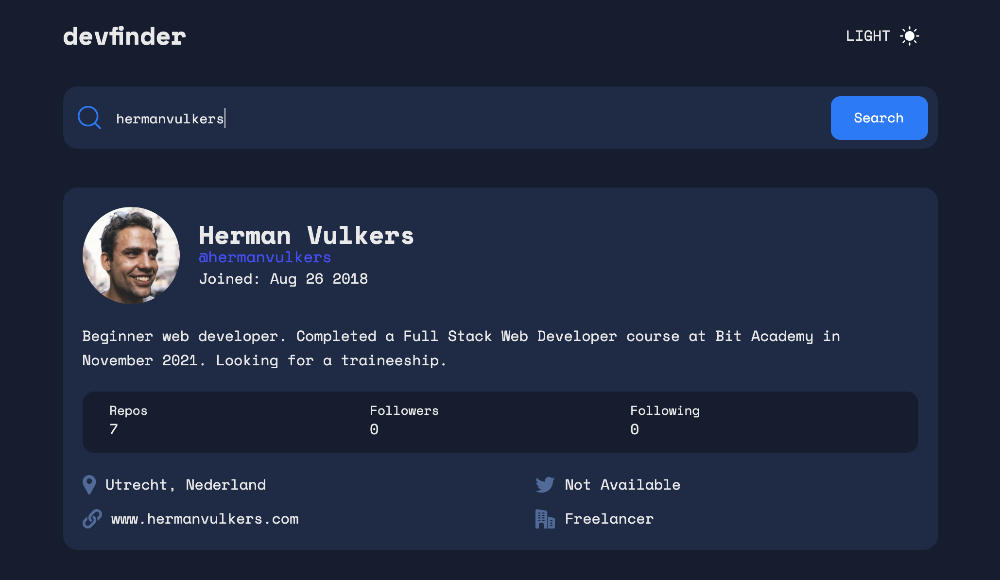

Project: devfinder
I created this app as a practice project to further develop my API integration, JavaScript, HTML and CSS skills. This code is the solution to one of the challenges developed by frontendmentor.io. They provided the raw materials, such as the text and the images. I wrote the code.
The challenge was to:
- View the optimal layout for the app depending on their device's screen size
- See hover states for all interactive elements on the page
- Search for GitHub users by their username
- See relevant user information based on their search
- Switch between light and dark themes
- Have the correct color scheme chosen for them based on their computer preferences
Example desktop view:
After hitting search, the most relevant GitHub profile is fetched from GitHub's server using their API. Through basic JavaScript, the relevant properties are taken from the received object and saved into variables. The variables are then inserted into the DOM.
Care was taken to make sure that empty search results and null variables displayed correct information on the website, such as 'No results' after a search query for a non-existing username:
The app was made responsive through CSS grid, with the bottom contact information grid shrinking to 2 columns in mobile view.
A dark mode theme switch was added, to allow users to switch to a more eye-friendly experience when needed:
This exercise introduced me to working with API's. I only touched the surface, but so far it is simpler than I expected. I am looking forward to working more intensively with API's in the future.